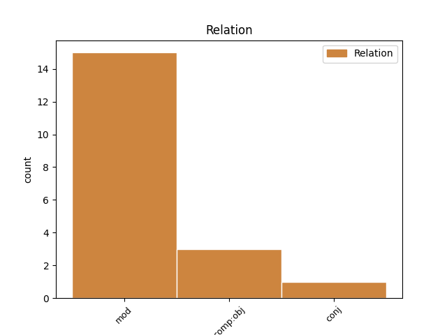
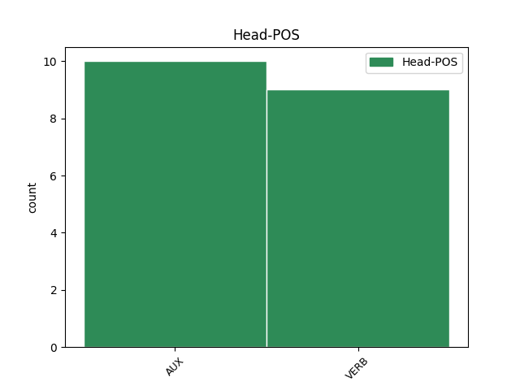
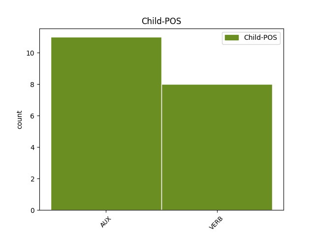

Distribution of features within this leaf



Agreement Rules sorted by frequency.
- When the dependent token is the direct object complements(comp:obj) of the head token, and the head token is VERB and the dependent token is AUX.
1 தனது _ _ _ _ 0 _ _ _
2 மதம் _ _ _ _ 0 _ _ _
3 தொடர்பான _ _ _ _ 0 _ _ _
4 குழப்பத்துக்கு _ _ _ _ 0 _ _ _
5 கண்டனம் _ _ _ _ 0 _ _ _
6 தெரிவித்த _ _ _ _ 0 _ _ _
7 ஒபாமா _ _ _ _ 0 _ _ _
8 , _ _ _ _ 0 _ _ _
9 இது _ _ _ _ 0 _ _ _
10 போன்ற _ _ _ _ 0 _ _ _
11 வதந்திகளுக்க் _ _ _ _ 0 _ _ _
12 ஆக _ _ _ _ 0 _ _ _
13 தான் _ _ _ _ 0 _ _ _
14 பெரிதும் _ _ _ _ 0 _ _ _
15 கவலைப்படப் _ _ _ _ 0 _ _ _
16 போவத் _ _ _ _ 0 _ _ _
17 இல்லை இல் AUX VR-T3PNAA Gender=Neut|Mood=Ind|Number=Plur|Person=3|Polarity=Pos|VerbForm=Fin|Voice=Act 18 comp:obj _ LTranslit=il|Translit=illai
18 என்றார் என் VERB Vr-D3SHAA Gender=Com|Mood=Ind|Number=Sing|Person=3|Polarity=Pos|Polite=Form|Tense=Past|VerbForm=Fin|Voice=Act 0 _ _ _
19 . _ _ _ _ 0 _ _ _
1 எனது _ _ _ _ 0 _ _ _
2 வார்த்தைகள் _ _ _ _ 0 _ _ _
3 யாருடைய _ _ _ _ 0 _ _ _
4 மனதைய் _ _ _ _ 0 _ _ _
5 உம் _ _ _ _ 0 _ _ _
6 புண்படுத்திய் _ _ _ _ 0 _ _ _
7 இருந்தால் _ _ _ _ 0 _ _ _
8 மன்னித்துக் _ _ _ _ 0 _ _ _
9 கொள்ளும் _ _ _ _ 0 _ _ _
10 ஆறு _ _ _ _ 0 _ _ _
11 ஏற்கெனவே _ _ _ _ 0 _ _ _
12 இரு _ _ _ _ 0 _ _ _
13 தடவை _ _ _ _ 0 _ _ _
14 கேட்டுக் _ _ _ _ 0 _ _ _
15 கொண்ட் _ _ _ _ 0 _ _ _
16 உள்ளேன் உள் AUX VR-T1SAAA Animacy=Anim|Gender=Com|Mood=Ind|Number=Sing|Person=1|Polarity=Pos|VerbForm=Fin|Voice=Act 17 mod _ LTranslit=uḷ|Translit=uḷḷēn
17 என்றார் என் VERB Vr-D3SHAA Gender=Com|Mood=Ind|Number=Sing|Person=3|Polarity=Pos|Polite=Form|Tense=Past|VerbForm=Fin|Voice=Act 0 _ _ _
18 . _ _ _ _ 0 _ _ _
1 அந்தப் _ _ _ _ 0 _ _ _
2 பணியை _ _ _ _ 0 _ _ _
3 மனித _ _ _ _ 0 _ _ _
4 நேய _ _ _ _ 0 _ _ _
5 மனப்பான்மையோடு _ _ _ _ 0 _ _ _
6 நாம் _ _ _ _ 0 _ _ _
7 நிறைவேற்றுவோம் _ _ _ _ 0 _ _ _
8 என்ற _ _ _ _ 0 _ _ _
9 அந்த _ _ _ _ 0 _ _ _
10 உணர்வைப் _ _ _ _ 0 _ _ _
11 பெற்று _ _ _ _ 0 _ _ _
12 மக்களைக் _ _ _ _ 0 _ _ _
13 காப்பாற்ற _ _ _ _ 0 _ _ _
14 வேண்டும் வேண்டு AUX VR-F3SNAA Gender=Neut|Mood=Ind|Number=Sing|Person=3|Polarity=Pos|Tense=Fut|VerbForm=Fin|Voice=Act 18 mod _ LTranslit=vēṇṭu|Translit=vēṇṭum
15 - _ _ _ _ 0 _ _ _
16 மக்களுக்குப் _ _ _ _ 0 _ _ _
17 பணியாற்ற _ _ _ _ 0 _ _ _
18 வேண்டும் வேண்டு AUX VR-F3SNAA Gender=Neut|Mood=Ind|Number=Sing|Person=3|Polarity=Pos|Tense=Fut|VerbForm=Fin|Voice=Act 0 _ _ _
19 . _ _ _ _ 0 _ _ _
1 இந்த _ _ _ _ 0 _ _ _
2 கூட்டுப் _ _ _ _ 0 _ _ _
3 பணியில் _ _ _ _ 0 _ _ _
4 நான் _ _ _ _ 0 _ _ _
5 உம் _ _ _ _ 0 _ _ _
6 ஈடுபட்டது _ _ _ _ 0 _ _ _
7 தலைமைச் _ _ _ _ 0 _ _ _
8 செயலாளர் _ _ _ _ 0 _ _ _
9 ஆக _ _ _ _ 0 _ _ _
10 நான் _ _ _ _ 0 _ _ _
11 இருந்த _ _ _ _ 0 _ _ _
12 காலத்தில் _ _ _ _ 0 _ _ _
13 சாதனைய் _ _ _ _ 0 _ _ _
14 ஆகக் _ _ _ _ 0 _ _ _
15 கருதுகிறேன் கருது VERB Vr-P1SAAA Animacy=Anim|Gender=Com|Mood=Ind|Number=Sing|Person=1|Polarity=Pos|Tense=Pres|VerbForm=Fin|Voice=Act 16 comp:obj _ LTranslit=karutu|Translit=karutukirēn
16 என்றார் என் VERB Vr-D3SHAA Gender=Com|Mood=Ind|Number=Sing|Person=3|Polarity=Pos|Polite=Form|Tense=Past|VerbForm=Fin|Voice=Act 0 _ _ _
17 கே.எஸ்.ஸ்ரீபதி _ _ _ _ 0 _ _ _
18 . _ _ _ _ 0 _ _ _
1 " _ _ _ _ 0 _ _ _
2 எங்களால் _ _ _ _ 0 _ _ _
3 முடிந்தளவு _ _ _ _ 0 _ _ _
4 உங்களுக்கு _ _ _ _ 0 _ _ _
5 உதவ _ _ _ _ 0 _ _ _
6 நாங்கள் _ _ _ _ 0 _ _ _
7 தயாராக _ _ _ _ 0 _ _ _
8 உள்ளோம் உள் AUX VR-T1PAAA Animacy=Anim|Gender=Com|Mood=Ind|Number=Plur|Person=1|Polarity=Pos|VerbForm=Fin|Voice=Act 0 _ _ _
9 ; _ _ _ _ 0 _ _ _
10 இயன்றவரை _ _ _ _ 0 _ _ _
11 கண்டிப்பாகச் _ _ _ _ 0 _ _ _
12 செய்வோம் _ _ _ _ 0 _ _ _
13 என்று _ _ _ _ 0 _ _ _
14 உள்ளூர் _ _ _ _ 0 _ _ _
15 மக்கள் _ _ _ _ 0 _ _ _
16 இடம் _ _ _ _ 0 _ _ _
17 உம் _ _ _ _ 0 _ _ _
18 அகதி _ _ _ _ 0 _ _ _
19 முகாம்களில் _ _ _ _ 0 _ _ _
20 உள்ள _ _ _ _ 0 _ _ _
21 தமிழர்களிடம் _ _ _ _ 0 _ _ _
22 அவர் _ _ _ _ 0 _ _ _
23 உறுதி _ _ _ _ 0 _ _ _
24 கூறினார் கூறு AUX Vr-D3SHAA Gender=Com|Mood=Ind|Number=Sing|Person=3|Polarity=Pos|Polite=Form|Tense=Past|VerbForm=Fin|Voice=Act 8 conj _ LTranslit=kūru|SpaceAfter=No|Translit=kūrinār
25 . _ _ _ _ 0 _ _ _
Disagree Examples:
1 குடும்பத்தினர் _ _ _ _ 0 _ _ _
2 எண்ணிக்கை _ _ _ _ 0 _ _ _
3 பெருகி _ _ _ _ 0 _ _ _
4 இட _ _ _ _ 0 _ _ _
5 நெருக்கடி _ _ _ _ 0 _ _ _
6 ஏற்படும் _ _ _ _ 0 _ _ _
7 நிலையில் _ _ _ _ 0 _ _ _
8 தங்களின் _ _ _ _ 0 _ _ _
9 மூதாதையர்கள் _ _ _ _ 0 _ _ _
10 வாழ்ந்த _ _ _ _ 0 _ _ _
11 வீட்டை _ _ _ _ 0 _ _ _
12 விரிவாக்கம் _ _ _ _ 0 _ _ _
13 செய்யவ் _ _ _ _ 0 _ _ _
14 ஓ _ _ _ _ 0 _ _ _
15 , _ _ _ _ 0 _ _ _
16 கூடுதல் _ _ _ _ 0 _ _ _
17 அறைய் _ _ _ _ 0 _ _ _
18 ஓ _ _ _ _ 0 _ _ _
19 , _ _ _ _ 0 _ _ _
20 தாழ்வாரம் _ _ _ _ 0 _ _ _
21 ஓ _ _ _ _ 0 _ _ _
22 , _ _ _ _ 0 _ _ _
23 கழிப்பு _ _ _ _ 0 _ _ _
24 அறைய் _ _ _ _ 0 _ _ _
25 ஓ _ _ _ _ 0 _ _ _
26 கட்டினால் கட்டு VERB Vw-T---AA Mood=Cnd|Polarity=Pos|VerbForm=Fin|Voice=Act 40 mod _ LTranslit=kaṭṭu|Translit=kaṭṭināl
27 கூட _ _ _ _ 0 _ _ _
28 இச் _ _ _ _ 0 _ _ _
29 சட்டத்தின் _ _ _ _ 0 _ _ _
30 படி _ _ _ _ 0 _ _ _
31 வீட்டின் _ _ _ _ 0 _ _ _
32 உரிமையாளர் _ _ _ _ 0 _ _ _
33 உம் _ _ _ _ 0 _ _ _
34 , _ _ _ _ 0 _ _ _
35 சம்பந்தப்பட்ட _ _ _ _ 0 _ _ _
36 அரசு _ _ _ _ 0 _ _ _
37 அதிகாரிகள் _ _ _ _ 0 _ _ _
38 உம் _ _ _ _ 0 _ _ _
39 தண்டிக்கப் _ _ _ _ 0 _ _ _
40 படுவார்கள் படு AUX VR-F3PHPA Gender=Com|Mood=Ind|Number=Plur|Person=3|Polarity=Pos|Polite=Form|Tense=Fut|VerbForm=Fin|Voice=Pass 0 _ _ _
41 . _ _ _ _ 0 _ _ _
1 ஏற்கனவே _ _ _ _ 0 _ _ _
2 வாழ்ந்து _ _ _ _ 0 _ _ _
3 வரும் _ _ _ _ 0 _ _ _
4 வீடுகள் _ _ _ _ 0 _ _ _
5 தொல்பொருள் _ _ _ _ 0 _ _ _
6 ஆய்வுத்துறையின் _ _ _ _ 0 _ _ _
7 அனுமதி _ _ _ _ 0 _ _ _
8 பெறாமல் _ _ _ _ 0 _ _ _
9 கட்டப் _ _ _ _ 0 _ _ _
10 பட்டு _ _ _ _ 0 _ _ _
11 இருப்பின் இரு AUX VW-T---AA Mood=Cnd|Polarity=Pos|VerbForm=Fin|Voice=Act 19 mod _ LTranslit=iru|SpaceAfter=No|Translit=iruppin
12 , _ _ _ _ 0 _ _ _
13 அவற்றை _ _ _ _ 0 _ _ _
14 இடிப்பதற்க் _ _ _ _ 0 _ _ _
15 உம் _ _ _ _ 0 _ _ _
16 அதிகாரம் _ _ _ _ 0 _ _ _
17 வழங்கப் _ _ _ _ 0 _ _ _
18 பட்டு _ _ _ _ 0 _ _ _
19 உள்ளது உள் AUX VR-T3SNAA Gender=Neut|Mood=Ind|Number=Sing|Person=3|Polarity=Pos|VerbForm=Fin|Voice=Act 0 _ _ _
20 . _ _ _ _ 0 _ _ _
1 இங்கிலாந்துக்கு _ _ _ _ 0 _ _ _
2 எதிரான _ _ _ _ 0 _ _ _
3 போட்டியில் _ _ _ _ 0 _ _ _
4 பாகிஸ்தான் _ _ _ _ 0 _ _ _
5 கிரிக்கெட் _ _ _ _ 0 _ _ _
6 வீரர்கள் _ _ _ _ 0 _ _ _
7 சூதாட்டத்தில் _ _ _ _ 0 _ _ _
8 ஈடுபட்டத் _ _ _ _ 0 _ _ _
9 ஆகத் _ _ _ _ 0 _ _ _
10 தெரிய _ _ _ _ 0 _ _ _
11 வந்தால் வா AUX VW-T---AA Mood=Cnd|Polarity=Pos|VerbForm=Fin|Voice=Act 17 mod _ LTranslit=vā|SpaceAfter=No|Translit=vantāl
12 , _ _ _ _ 0 _ _ _
13 அவர்களுக்கு _ _ _ _ 0 _ _ _
14 வாழ்நாள் _ _ _ _ 0 _ _ _
15 தடை _ _ _ _ 0 _ _ _
16 விதிக்க _ _ _ _ 0 _ _ _
17 வேண்டும் வேண்டு AUX VR-F3SNAA Gender=Neut|Mood=Ind|Number=Sing|Person=3|Polarity=Pos|Tense=Fut|VerbForm=Fin|Voice=Act 0 _ _ _
18 என _ _ _ _ 0 _ _ _
19 இங்கிலாந்து _ _ _ _ 0 _ _ _
20 அணியின் _ _ _ _ 0 _ _ _
21 முன்னாள் _ _ _ _ 0 _ _ _
22 பேட்ஸ்மேன் _ _ _ _ 0 _ _ _
23 ஆலன் _ _ _ _ 0 _ _ _
24 லாம்ப் _ _ _ _ 0 _ _ _
25 கோரிக்கை _ _ _ _ 0 _ _ _
26 விடுத்துள்ளார் _ _ _ _ 0 _ _ _
27 . _ _ _ _ 0 _ _ _
1 சர்வதேச _ _ _ _ 0 _ _ _
2 கிரிக்கெட்டில் _ _ _ _ 0 _ _ _
3 மோசடிக்கு _ _ _ _ 0 _ _ _
4 இடம்தரக் _ _ _ _ 0 _ _ _
5 கூடாது _ _ _ _ 0 _ _ _
6 எனக் _ _ _ _ 0 _ _ _
7 கூறிய _ _ _ _ 0 _ _ _
8 லாம்ப் _ _ _ _ 0 _ _ _
9 , _ _ _ _ 0 _ _ _
10 எந்த _ _ _ _ 0 _ _ _
11 வீரர் _ _ _ _ 0 _ _ _
12 ஆவது _ _ _ _ 0 _ _ _
13 சூதாட்டத்தில் _ _ _ _ 0 _ _ _
14 ஈடுபட்டது _ _ _ _ 0 _ _ _
15 தெரிய _ _ _ _ 0 _ _ _
16 வந்தால் வா AUX VW-T---AA Mood=Cnd|Polarity=Pos|VerbForm=Fin|Voice=Act 23 mod _ LTranslit=vā|Translit=vantāl
17 அவருக்கு _ _ _ _ 0 _ _ _
18 வாழ்நாள் _ _ _ _ 0 _ _ _
19 முழுவதும் _ _ _ _ 0 _ _ _
20 கிரிக்கெட் _ _ _ _ 0 _ _ _
21 விளையாடத் _ _ _ _ 0 _ _ _
22 தடைவிதிக்க _ _ _ _ 0 _ _ _
23 வேண்டும் வேண்டு AUX VR-F3SNAA Gender=Neut|Mood=Ind|Number=Sing|Person=3|Polarity=Pos|Tense=Fut|VerbForm=Fin|Voice=Act 0 _ _ _
24 என்றார் _ _ _ _ 0 _ _ _
25 . _ _ _ _ 0 _ _ _
1 முல்லைப் _ _ _ _ 0 _ _ _
2 பெரியாறு _ _ _ _ 0 _ _ _
3 அணையை _ _ _ _ 0 _ _ _
4 உடைத்தால் உடை VERB Vw-T---AA Mood=Cnd|Polarity=Pos|VerbForm=Fin|Voice=Act 7 mod _ LTranslit=uṭai|Translit=uṭaittāl
5 விபரீத _ _ _ _ 0 _ _ _
6 விளைவுகள் _ _ _ _ 0 _ _ _
7 ஏற்படும் ஏற்படு VERB Vr-F3SNAA Gender=Neut|Mood=Ind|Number=Sing|Person=3|Polarity=Pos|Tense=Fut|VerbForm=Fin|Voice=Act 0 _ _ _
8 . _ _ _ _ 0 _ _ _